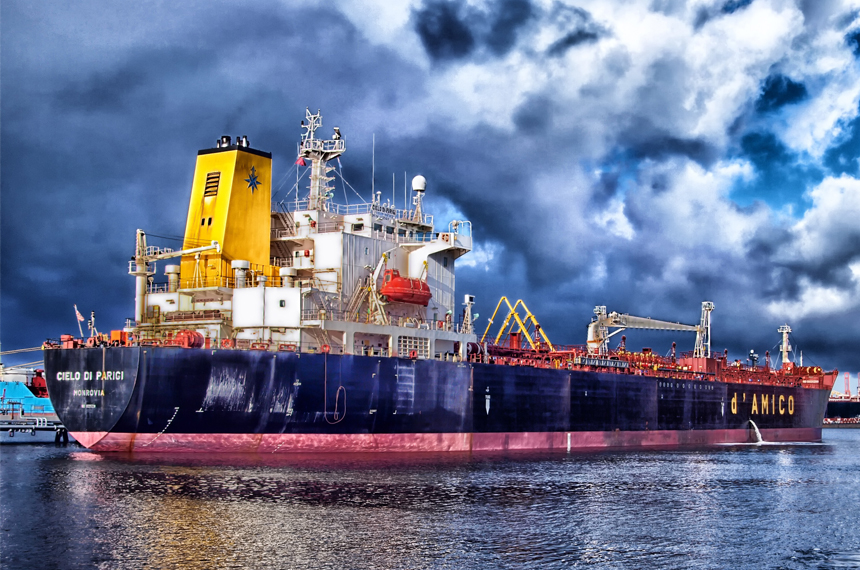

조선사업
개요
삼성중공업은 세계 유수의 해운선사로부터 1,249척(2019년 12월 기준)의 선박을 수주하여 그 중 1,135척을 성공적으로 인도하며 뛰어난 기술력과 우수한 품질을 인정받고 있습니다.
1995년 국내 최초로 셔틀탱커를 건조한 이래 전세계에서 발주된 셔틀탱커 138척 가운데 61척을 수주해 시장 점유율 44%를 장악하며 압도적인 품질 경쟁력을 입증하고 있습니다.
제품 소개
이전 탭 다음 탭-
LNG선
친환경 고효율 엔진으로
LNG선 시장선도 -
부유식 재기화설비 FSRU
재기화설비 강자로 부상
-
쇄빙 유조선
극지 원유 운송 새 지평,
양방향 쇄빙유조선 -
Container선
컨테이너선 대형화 주도
-
여객선
유럽형 대형 여객선의
지속적인 개발